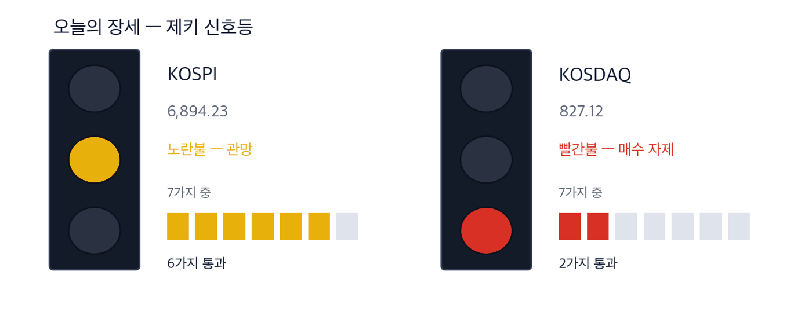
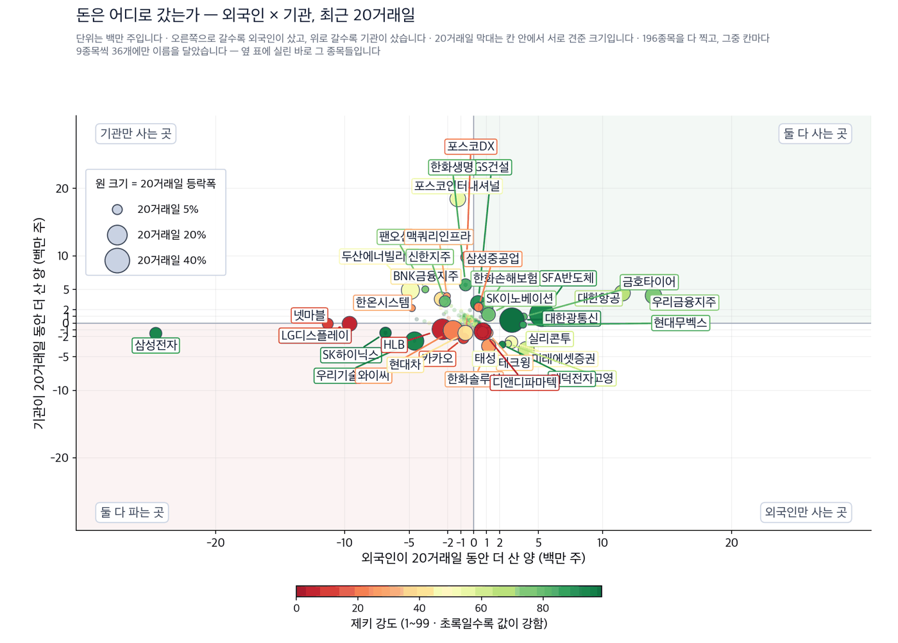
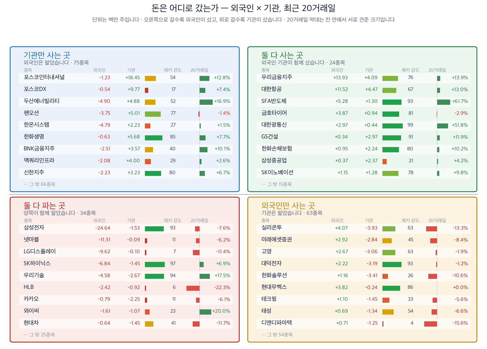

일본이 금리를 올린 날, 서울은 2.66% 올라 6,894.23으로 마쳤습니다
2026년 9월 19일 · 값은 9월 18일 종가 기준입니다
신문에서 저희가 갖고 있지 않은 회사를 찾아, 왜 값을 할 수 있는지 숫자로 적습니다.
코스피 6,894.23 (+2.66%) | 코스닥 827.12 (+0.60%) | 나스닥 26,523 (+0.39%) | 미 국채 10년물 5.00% | 제키 신호등 노란불 |

이 그림 읽는 법
| 켜진 등 | 오늘의 국면입니다. 초록은 매수 우위, 노랑은 관망, 빨강은 매수 자제입니다. |
| 채워진 칸 | 7가지 조건 중 몇 개를 통과했는지입니다. 칸이 많이 찰수록 시장 구조가 튼튼합니다. |
| 칸이 다 찼는데 노랑·빨강이면 | 다른 이유로 한 단계 낮춘 것입니다. 그림 아래에 그 이유를 적었습니다. |
제키 신호등은 시장 국면을 7가지로 재서 하나로 줄인 것입니다. 코스피가 빨간불에서 노란불로 올라섰습니다. 7가지 가운데 6가지를 지났습니다. 코스닥은 2가지에 그쳐 빨간불입니다.
실행 요약 — 결론부터 3가지
- 일본은행이 9월 18일 기준금리를 연 1.00%에서 1.25%로 올렸습니다. 더 올리자는 소수 의견은 나오지 않았습니다. 코스피는 발표 시각부터 반등해 2.66% 상승 마감했습니다.
- 오른 곳은 반도체입니다. 삼성전자가 3.73%, SK하이닉스가 6.42% 올랐습니다. 후공정 회사 SFA반도체는 20거래일 동안 61.7% 올랐습니다. 외국인과 기관이 같은 기간에 함께 샀습니다.
- 서부텍사스유가 하루 만에 6.2% 내려 배럴당 95.59달러가 됐습니다. 항공유는 항공사 영업비용에서 가장 큰 항목입니다. 대한항공은 1년 최고가에서 4.0% 아래에 있습니다.
그래서 어떻게 하나: 9월 21일 개장 30분 동안 반도체 후공정과 항공 가운데 어느 쪽에 거래가 몰리는지 보시면 됩니다.
먼저, 이번 주 경제
숫자 하나만 기억하신다면 1.25%입니다. 일본의 기준금리이고 31년 만에 가장 높습니다. 미국은 9월 16일 먼저 올려 연 3.75~4.00%가 됐습니다. 두 나라가 같은 주에 올렸는데도 서울은 상승으로 마쳤습니다. (한국경제)
| 날짜 | 무엇을 보는가 | 넘으면 어떻게 되는가 |
|---|
| 9월 21일(월) 개장 30분 | 코스피가 6,894.23을 지키는지 | 지키면 이틀 연속 상승이 이어집니다 |
| 9월 23일(수) 마감 | 외국인이 연휴를 앞두고 파는지 | 팔면 안도 랠리의 힘이 약해집니다 |
| 9월 24~25일 | 추석으로 한국 증시가 쉽니다 | 이틀 사이 뉴욕에서 생긴 일이 9월 28일에 한꺼번에 반영됩니다 |
테마 1 · 엔 캐리 공포가 물러나자 반도체가 먼저 움직였습니다
일본의 인상 폭이 예상보다 작았습니다. 엔화로 빌린 돈이 한꺼번에 빠져나갈 걱정이 줄었습니다. 그 자리를 반도체가 채웠습니다. 같은 날 SK하이닉스의 미국 자회사 솔리다임이 미국 동부에 낸드 생산라인을 두는 방안을 살피고 있다는 소식이 나왔습니다. (한국경제)
SFA반도체 (036540) 근거 확실 · 저희가 고른 대표주
종가 8,990원 · 9월 18일 +3.21% · 20거래일 +61.69%
석 달 +46.18% · 제키 강도 93 · 1년 최고가 대비 -18.35%
누가 SK하이닉스의 미국 자회사 솔리다임이 · 무엇을 첫 미국 생산거점 설치 검토를 · 언제 9월 18일에 · 어디서 미국 동부에서 · 왜 인공지능 데이터센터용 고용량 낸드 주문이 늘어서 · 어떻게 국내 후공정 외주 물량이 함께 늘어납니다
외국인이 20거래일 동안 +528만주를 사들였고 기관도 +130만주를 더 샀습니다. 제키 강도는 93입니다. 수급 기준일은 9월 17일입니다.
확인 신호 — 9월 18일 종가 8,990원은 50일 평균 5,867원 위입니다. 이 자리를 지키면 낸드 이야기가 유지됩니다.
철회 기준 — 8월 21일 종가 5,560원을 밑돌아 마치면 20거래일 상승이 지워집니다. 제키 강도가 90 아래로 내려가도 후보에서 뺍니다.
테마 2 · 콘덴서 값이 오르고 있습니다
적층세라믹콘덴서는 전자 회로에 전기를 고르게 흘려보내는 부품입니다. 인공지능 데이터센터와 전기차, 에너지저장장치가 한꺼번에 이 부품을 가져갑니다. 고신뢰성 제품이 모자라 값을 올린다는 기대가 커졌습니다. (한국경제)
삼화콘덴서 (001820) 근거 확실 · 저희가 고른 대표주
종가 143,900원 · 9월 18일 +3.30% · 20거래일 +58.83%
석 달 +5.81% · 제키 강도 96 · 1년 최고가 대비 -24.30%
누가 국내 적층세라믹콘덴서 회사가 · 무엇을 값 인상 기대를 · 언제 9월 18일에 · 어디서 인공지능 서버와 전기차 시장에서 · 왜 고신뢰성 제품이 모자라서 · 어떻게 수익성이 좋아집니다
외국인이 20거래일 동안 +21만주를 샀고 기관도 +57만주를 더 샀습니다. 제키 강도는 96입니다. 수급 기준일은 9월 17일입니다.
확인 신호 — 9월 18일 종가 143,900원은 50일 평균 98,952원 위입니다. 그 위에서 마치는 동안은 값 인상 이야기가 유지됩니다.
철회 기준 — 8월 21일 종가 90,600원을 밑돌아 마치면 20거래일 상승이 지워집니다. 공급이 풀렸다는 보도가 나와도 전제가 사라집니다.
테마 3 · 기름값이 하루 만에 6% 내렸습니다
중국이 이란에 후티반군을 자제시키라고 경고했습니다. 사우디아라비아의 공급 차질 걱정도 줄었습니다. 서부텍사스유는 배럴당 95.59달러로 내려왔습니다. 기름값이 내리면 연료를 가장 많이 쓰는 업종이 먼저 숨을 돌립니다. 다만 그날 항공사 업종은 1.51% 내렸습니다. 값이 아직 따라오지 않은 자리입니다. (한국경제)
대한항공 (003490) 근거 있음 · 저희가 고른 대표주
종가 29,150원 · 9월 18일 -1.35% · 20거래일 +12.98%
석 달 +6.58% · 제키 강도 67 · 1년 최고가 대비 -3.95%
누가 국적 항공사가 · 무엇을 연료비 부담이 줄어드는 국면을 · 언제 9월 18일에 · 어디서 국제 유가 시장에서 · 왜 중동 공급 걱정이 완화돼서 · 어떻게 영업비용이 가벼워집니다
외국인이 20거래일 동안 +1,152만주를 샀고 기관도 +447만주를 더 샀습니다. 제키 강도는 67입니다. 90에 못 미칩니다. 수급 기준일은 9월 17일입니다.
확인 신호 — 9월 18일 종가 29,150원은 50일 평균 27,167원 위입니다. 유가가 더 내리는 동안 이 자리를 지키는지 보시면 됩니다.
철회 기준 — 8월 21일 종가 25,800원을 밑돌아 마치면 20거래일 상승이 지워집니다. 유가가 다시 100달러를 넘어서면 전제가 사라집니다.
오늘 제외한 테마 2가지
현대차가 다음달부터 조지아주 공장에서 구글 웨이모에 납품할 로보택시를 수만 대 만든다고 9월 17일 밝혔습니다. 2028년부터는 부품을 골라 담는 공정에 휴머노이드 로봇을 넣습니다. 소식은 크지만 값이 따라오지 않았습니다. 20거래일 동안 11.7% 내렸고 제키 강도는 41입니다. 외국인과 기관이 같은 기간에 모두 팔았습니다.
제외 현대차 (005380)는 오늘 후보에서 뺍니다.
올해 발주된 초대형원유운반선이 217척으로 2000년 이후 가장 많습니다. 지난해는 93척이었습니다. 선주들이 호르무즈해협 통과를 꺼리면서 대서양에서 아시아로 가는 긴 항로가 늘었습니다. 그런데 국내 조선사 값은 아직 움직이지 않았습니다. 한화오션은 20거래일 동안 0.8% 내렸고 제키 강도는 9입니다. (한국경제)
제외 한화오션 (042660)은 값이 따라올 때까지 기다립니다.
오늘 찾은 것, 한 장으로
| 테마 | 종목 | 제키 강도 | 근거의 무게 |
|---|
| 반도체 후공정 | SFA반도체 (036540) | 93 | 근거 확실 |
| 적층세라믹콘덴서 | 삼화콘덴서 (001820) | 96 | 근거 확실 |
| 유가 하락 | 대한항공 (003490) | 67 | 근거 있음 |
| 로보택시 (제외) | 현대차 (005380) | 41 | 근거 없음 |
| 유조선 발주 (제외) | 한화오션 (042660) | 9 | 확인 필요 |
근거의 무게 — 4가지를 세었습니다
①값이 올랐는가 ②제키 강도가 90을 넘는가 ③외국인이 순매수인가 ④기관이 순매수인가. 넷 모두 20거래일 기준입니다. 채운 수가 딱지를 정합니다. 값은 9월 18일 종가, 수급은 9월 17일 기준입니다.
| 종목 | ①20거래일
상승 | ②강도
90↑ | ③외국인
순매수 | ④기관
순매수 | 충족 | 근거의 무게 |
|---|
| SFA반도체 (036540) | O | O | O | O | 4/4 | 근거 확실 |
| 삼화콘덴서 (001820) | O | O | O | O | 4/4 | 근거 확실 |
| 대한항공 (003490) | O | X | O | O | 3/4 | 근거 있음 |
| 현대차 (005380) | X | X | X | X | 0/4 | 근거 없음 |
| 한화오션 (042660) | X | X | O | X | 1/4 | 확인 필요 |
기관·외국인은 어디로 갔나
아래 두 그림과 표는 기사와 무관합니다. 거래소가 공시한 순매수를 그대로 세어 돈이 실제로 어디로 갔는지 봅니다. 저희가 계산한 값이 아니므로 제키라는 이름을 붙이지 않습니다. 기준일은 9월 17일이고, 거래가 얇은 종목은 뺐습니다.

이 그림 읽는 법
| 점 하나 | 종목 하나입니다. 가로·세로 위치가 두 값을 그대로 나타내고, 가운데 가로·세로로 그어진 두 선이 기준선입니다. 네 귀퉁이의 이름표가 그 칸의 뜻입니다. |
| 점 크기 | 최근 20거래일 등락폭입니다. 오르든 내리든 크게 움직였으면 큰 점입니다. |
| 점 색 | 제키 강도입니다. 초록일수록 주가가 시장에서 강합니다. |
| 30종목만 | 이름이 겹치면 못 읽기 때문입니다. 가운데 몰린 나머지는 움직임이 거의 없는 종목들이라 뺐습니다. |

이 그림 읽는 법
| 이 그림이 말하지 않는 것 | 같은 기간의 수급과 등락을 나란히 놓은 것입니다. 앞으로는 이렇습니다 — 외국인과 기관이 사면 하루 이틀은 실제로 오릅니다. 그 다음 되돌립니다. 그리고 그 폭이 세금과 수수료보다 작습니다. 그래서 이 그림을 보고 사고파시면 손해입니다. 둘 다 사들이는 것을 보고 그 다음 날 사면, 20거래일 뒤에 올라 있을 확률은 48%입니다 — 아무 종목이나 골랐을 때(49%)와 같습니다. 저희가 503종목 17년치로 쟀습니다. |
| 네 칸 | 가로와 세로 두 값이 각각 기준선을 넘었는지로 넷을 가릅니다. 오른쪽 위는 둘 다 넘은 곳, 왼쪽 아래는 둘 다 못 넘은 곳, 나머지 두 칸은 한쪽만 넘은 곳입니다. 칸 이름이 그 칸에 든 종목의 상태를 한 문장으로 적어 둔 것입니다. |
| 가운데 두 칸 | 두 기간을 견주는 자리입니다. 글자 A~E가 있으면 이 업계가 쓰는 표준 등급으로, A는 강한 매수, B는 매수 우세, C는 매수와 매도가 반반, D는 매도 우세, E는 강한 매도를 뜻합니다(전체를 다섯으로 나눈 순위라 A가 상위 20%입니다). 숫자가 있으면 그 기간에 산 양에서 판 양을 뺀 것입니다. |
| 칸마다 9종목 | 그 칸에서 움직임이 가장 큰 순서입니다. 나머지는 칸 아래에 몇 종목인지만 적었습니다. 옆 산점도가 이름을 다는 종목이 바로 이 9종목씩입니다. |
| 20거래일 막대 | 0을 가운데 두고 오른쪽이 상승, 왼쪽이 하락입니다. 길이는 같은 칸 안에서만 서로 견주십시오 — 칸마다 기준이 다릅니다. |
| 제키 강도 | 1~99 순위입니다. 막대가 길수록, 초록에 가까울수록 그 종목의 주가가 시장에서 강합니다. |
저희가 보는 외국인·기관 매매 자료의 277종목을 하나도 빠짐없이 확인했습니다. 하루 평균 거래대금 30억원 미만은 뺐습니다 — 사고팔 때 제값을 못 받기 때문입니다.
자료의 한계를 먼저 밝힙니다. 종목마다 마지막 기록일이 다르고, 어느 것도 오늘까지 오지 않았습니다. 표 오른쪽 끝에 종목별 기준일을 적었습니다.
외국인이 가장 많이 산 5종목
| 종목 | 20일 동안 더 산 양(주) | 제키 강도 | 20거래일 등락 | 기준일 |
|---|
| 우리금융지주 316140 | +13,931,405 | 76 | +13.9% | 09-17 |
| 대한항공 003490 | +11,524,964 | 67 | +13.0% | 09-17 |
| SFA반도체 036540 | +5,283,682 | 93 | +61.7% | 09-17 |
| 실리콘투 257720 | +4,073,723 | 63 | -13.3% | 09-17 |
| 금호타이어 073240 | +3,870,560 | 81 | -2.9% | 09-17 |
외국인이 가장 많이 판 5종목
| 종목 | 20일 동안 더 산 양(주) | 제키 강도 | 20거래일 등락 | 기준일 |
|---|
| 삼성전자 005930 | -24,638,623 | 93 | -7.6% | 09-17 |
| 넷마블 251270 | -11,309,618 | 11 | -6.2% | 09-17 |
| LG디스플레이 034220 | -9,620,116 | 7 | -11.4% | 09-17 |
| SK하이닉스 000660 | -6,835,070 | 97 | +6.9% | 09-17 |
| 두산에너빌리티 034020 | -4,904,491 | 52 | +16.9% | 09-17 |
기관이 가장 많이 산 5종목
| 종목 | 20일 동안 더 산 양(주) | 제키 강도 | 20거래일 등락 | 기준일 |
|---|
| 포스코인터내셔널 047050 | +18,452,113 | 54 | +12.8% | 09-17 |
| 포스코DX 022100 | +9,771,730 | 17 | +7.4% | 09-17 |
| 한화생명 088350 | +5,679,320 | 85 | +7.7% | 09-17 |
| 팬오션 028670 | +5,007,944 | 77 | -1.4% | 09-17 |
| 두산에너빌리티 034020 | +4,884,345 | 52 | +16.9% | 09-17 |
기관이 가장 많이 판 5종목
| 종목 | 20일 동안 더 산 양(주) | 제키 강도 | 20거래일 등락 | 기준일 |
|---|
| 실리콘투 257720 | -3,934,271 | 63 | -13.3% | 09-17 |
| 한화솔루션 009830 | -3,411,350 | 26 | -10.6% | 09-17 |
| 대덕전자 353200 | -3,194,826 | 93 | -1.2% | 09-17 |
| 고영 098460 | -3,059,110 | 63 | -1.9% | 09-17 |
| 미래에셋증권 006800 | -2,835,699 | 45 | -8.4% | 09-17 |
정면으로 엇갈린 종목 — 실리콘투는 외국인 +4,073,723주, 기관 -3,934,271주로 서로 반대편에 섰습니다. 20거래일 주가는 -13.3%입니다. 한쪽이 크게 틀린 자리이므로 값이 크게 움직입니다.
찾아낸 종목에 자금이 따라왔는가
기사와 값이 맞아도 자금은 따로 봅니다. 위에서 고른 종목만 모아 순매수를 다시 적었습니다.
| 종목 | 외국인 20거래일 | 기관 20거래일 | 어느 쪽이 샀나 | 기준일 |
|---|
| SFA반도체 (036540) | +528만주 | +130만주 | 둘 다 샀습니다 | 2026-09-17 |
| 삼화콘덴서 (001820) | +21만주 | +57만주 | 둘 다 샀습니다 | 2026-09-17 |
| 대한항공 (003490) | +1,152만주 | +447만주 | 둘 다 샀습니다 | 2026-09-17 |
| 현대차 (005380) | −64만주 | −145만주 | 둘 다 팔았습니다 | 2026-09-17 |
| 한화오션 (042660) | +55만주 | −64만주 | 외국인만 샀습니다 | 2026-09-17 |
업종은 어디가 셌나
9월 18일 가장 많이 오른 업종은 전기장비로 5.29%입니다. 통신장비가 5.01%로 뒤를 이었습니다. 저희가 보는 644종목을 업종별로 묶어 평균을 낸 값입니다.
반대편에는 손해보험 -2.02%, 은행 -1.82%가 있습니다. 두 업종은 20거래일로는 각각 1.51%, 5.93% 올라 있습니다. 금리 인상이 값에 먼저 들어간 뒤 하루를 쉰 모습입니다.
장중 체크리스트
| 언제 | 무엇을 보는가 |
|---|
| 9월 21일 개장 30분 | 코스피가 6,894.23 위에서 버티는지 보십시오 |
| 9월 21일 개장 30분 | 반도체 후공정과 항공 가운데 어디에 거래가 몰리는지 보십시오 |
| 9월 21일 마감 30분 | 삼화콘덴서가 50일 평균 98,952원 위에서 마치는지 보십시오 |
오늘 종목을 어떻게 읽으실지
제키 강도는 저희가 보는 전체 종목 가운데 값이 몇 등인지를 1에서 99로 매긴 것입니다. 99가 가장 강합니다.
확인 신호와 철회 기준은 저희가 미리 적어 두는 조건입니다. 나중에 골라 쓰지 못하도록 값과 날짜를 함께 적습니다.
오늘 읽은 자료 — 한국경제 9월 19일자 지면과 기사, 한국거래소 공시 순매수, 저희 시세·수급 자료(9월 18일 종가·9월 17일 수급). 원문 문장을 옮기지 않고 사실만 가져와 저희 문장으로 썼습니다.
저희 시세 자료에는 상장폐지된 회사가 빠져 있습니다. 그래서 지난 성과가 실제보다 높게 나오는 치우침이 있습니다.
이 다이제스트는 저희가 계산한 값으로 걸러낸 종목을 싣습니다. 개별 투자 자문이 아니며 특정 종목의 매수나 매도를 권하지 않습니다. 실린 등급과 순위는 모두 저희가 계산한 것이고, 모의 포트폴리오 기준입니다. 투자에는 원금 손실 위험이 따릅니다.
This is the Rex Way, ZekiRex™